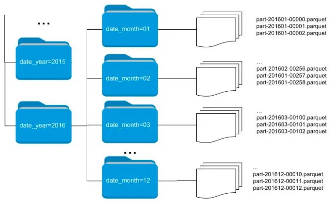

Bonnes pratiques pour les projets statistiques
Une formation aux bonnes pratiques avec Git et R
Introduction
- Version courte de la formation aux bonnes pratiques avec
RetGit(page d’accueil)

Introduction
La notion de bonnes pratiques
Origine : communauté des développeurs logiciels
Constats :
- le “code est plus souvent lu qu’écrit” (Guido Van Rossum)
- la maintenance d’un code est très coûteuse
Conséquence : un ensemble de règles informelles, conventionnellement acceptées comme produisant des logiciels fiables, évolutifs et maintenables
Pourquoi s’intéresser aux bonnes pratiques ?
L’activité du statisticien / datascientist tend à se rapprocher de celle du développeur :
projets intenses en code
projets collaboratifs et de grande envergure
complexification des données et donc des infrastructures
déploiement d’applications pour valoriser les analyses
Bonnes pratiques et reproductibilité

Source : Peng R., Reproducible Research in Computational Science, Science (2011)
Une reproductibilité parfaite est coûteuse
Gitest un standard atteignable et efficient
Note
Quel socle de bonnes pratiques pour les projets statistiques en ?
Horizon de cette formation
Un point de départ commun

Horizon de cette formation
Un point de départ commun
Une structuration de projet plus viable

Partie 1 : contrôle de version avec Git
Plan de la partie
1️⃣ Le contrôle de version : pourquoi faire ?
2️⃣ Le contrôle de version avec Git
I- Le contrôle de version : pourquoi faire ?
1️⃣ Archiver son code proprement
pour en finir avec ça :

1️⃣ Archiver son code proprement
ou ça :

1️⃣ Archiver son code proprement
ou encore ça :
prior <- read_csv(prior_path)
prior <- prior %>%
select(id, proba_inter, proba_build, proba_rfl) %>%
separate(id, into = c('nidt', 'grid_id'), sep = ":") %>%
group_by(nidt) %>%
mutate(
proba_build = proba_build/sum(proba_build),
proba_rfl = proba_rfl/sum(proba_rfl),
) %>%
unite(col = "id", nidt, grid_id, sep = ":")
# Test
# prior_test <- prior %>%
# mutate(
# proba_inter = round(proba_inter, 4)
# proba_build = round(proba_build, 4)
# proba_rfl = round(proba_rfl, 4)
# )
write_csv(prior_round, "~/prior.csv")1️⃣ Archiver son code proprement
Pour arriver à ça :

Source : ThinkR
2️⃣ Voyager dans le temps (de votre projet)

3️⃣ Une collaboration simplifiée et efficace
Un modèle distribué

Source : specbee.com
3️⃣ Une collaboration simplifiée et efficace
Qui permet l’expérimentation en toute sécurité

Source : lutece.paris.fr
3️⃣ Une collaboration simplifiée et efficace
Quel que soit l’environnement de travail

3️⃣ Une collaboration simplifiée et efficace
Avec des outils pour faciliter la collaboration

4️⃣ Partager son code à un public large
Une vitrine pour les projets et l’organisation

En résumé
Construire et naviguer à travers l’historique de son projet
La collaboration rendue simple et efficace
Améliorer la reproductibilité de ses projets
Améliorer la visibilité de ses projets
II- Le contrôle de version avec Git
⚠️ Git est complexe
L’utilisation de Git nécessite certaines notions préalables:
- Fonctionnement d’un
filesystem - Connaissance basique du terminal
Linux - Potentiellement, un grand nombre de commandes

⚠️ Git est complexe
Mais
- L’usage quotidien n’implique que quelques commandes
- Les messages de
Gitsont très informatifs - Enormément de ressources disponibles sur internet
- Des interfaces visuelles (ex:
RStudio,Sublime Merge,VS Code) qui facilitent l’apprentissage - Un petit investissement individuel pour de gros gains collectifs
Concepts
Git, GitHub, GitLab… quelles différences ?
Gitest un logiciel ;- Utilisation en ligne de commandes
- Différentes interfaces graphiques (
RStudio,VS Code…)
Concepts
Git, GitHub, GitLab… quelles différences ?
GitHubetGitLabsont des forges logicielles- Forge: espace d’archivage de code
- Des fonctionalités supplémentaires : réseau social du code
Astuce
GitHub: utilisation pour les projets open-sourceGitLab: utilisation pour les projets internes
Concepts
Dépôt local / dépôt distant (remote)

- Par défaut, le dépôt distant porte l’alias
origin
Concepts
Workflow local

Source : Git Documentation
Concepts
Workflow complet

Commandes essentielles
| Action | Commande |
|---|---|
| Cloner un projet | git clone [url-to-git-repo] |
| Afficher les changements | git status |
| Retrouver l’URL du dépôt distant | git remote -v |
Commandes essentielles
| Action | Commande |
|---|---|
Ajouter des changements à l’index de Git (stage fixes) |
Un seul fichier : git add <file-name> Tous les fichiers déjà indexés : git add -u Tous les fichiers ⚠️ : git add -A |
Warning
La méthode git add -A peut amener à suivre les modifications de fichiers qui ne devraient pas l’être (par exemple, des données).
Il est recommandé de bien réfléchir avant de l’utiliser (ou d’avoir un bon .gitignore)
Commandes essentielles
| Action | Commande |
|---|---|
Faire un commit |
git commit -m "message" |
Pousser les changements locaux vers le dépôt distant (branche master) |
git push origin master |
Récupérer les changements sur le dépôt distant (branche master) |
git pull origin master |
Modes d’authentification
- https
git clone https://github.com/username/projet.git- simple à utiliser
- authentification username + password (ou token) à chaque push
- ssh
git clone git@github.com:username/projet.git- (plus) complexe à initialiser
- authentification automatique
- https
git clone https://gitlab.insee.fr/username_or_groupname/projet.git- simple à utiliser
- authentification username + password (ou token) à chaque push
- ssh
git clone git@gitlab.insee.fr:username_or_groupname/projet.git- (plus) complexe à initialiser
- authentification automatique
Application 0
Préparation de l’environnement de travail
- Créer un compte
GitHub - Créer un nouveau dépôt privé sur
GitHuben incluant un fichierREADME - Créer un compte sur le SSP Cloud
- Lancer un service
RStudio. Dans l’onglet de configurationGitdu service, fixer la durée duCachepour le stockage des identifiantsGitHubà une valeur suffisamment élevée - Cloner le dépôt distant sur votre environnement local (ici, le
RStudioduDatalab):File→New project→Version Control→Git
- Générer un token (jeton d’authentification) sur
GitHub - Stocker le token sur le
SSP Cloud(ou un gestionnaire de mot de passe) :Mon Compte->Git->Token d'accès personnel pour Forge Git
- Terminer la procédure de clonage en fournissant le nom d’utilisateur
GitHubet le token
Préparation de l’environnement de travail
- Compte déjà créé sur le gitlab interne
- Créer un nouveau dépôt privé sur
gitlab.insee.fr - Créer un compte sur LS3 via AUS.
- Lancer un service
RStudio. Dans l’onglet de configurationGitdu service, fixer la durée duCachepour le stockage des identifiantsGitlabà une valeur suffisamment élevée - Cloner le dépôt distant sur votre environnement local (ici, le
RStudiode la plateformeLS3):File→New project→Version Control→Git
- Générer un token (jeton d’authentification) sur
gitlab.insee.fr - Stocker le token sur
LS3(ou un gestionnaire de mot de passe) :Mon Compte->Git->Token d'accès personnel pour Forge Git
- Terminer la procédure de clonage en fournissant le nom d’utilisateur (IDEP) et le token
❓ Question : qu’est ce qui différencie le projet cloné d’un projet quelconque ?
Application 1
Premiers commits
- Créer un dossier 📁
scripts - Y créer les fichiers
script1.Retscript2.R, chacun contenant quelques commandesRde votre choix - Ajouter ces fichiers à la zone de staging de Git en les cochant dans l’interface
RStudio - Effectuer un
commit, auquel on donnera un message descriptif pertinent - Supprimer le fichier
script1.Ret modifier le contenu du fichierscript2.R - Analyser ce qui se passe lorsque l’on coche ces fichiers dans l’interface
RStudio - Effectuer un nouveau commit pour ajouter ces modifications à l’historique
- Visualiser l’historique du projet à partir de l’interface graphique de
RStudio
❓ Question : à ce stade, le dépôt du projet sur GitHub / Gitlab (remote) a-t-il été modifié ?
Application 2
Interactions avec le dépôt distant
- Effectuer un
pushpour intégrer les changements locaux au projet distant - Parcourir l’historique du projet sur
GitHub/Gitlab- Faire apparaître les différences entre deux versions consécutives du projet
- Afficher une version passée du projet
Bonnes pratiques
Que versionne-t-on ?
- Essentiellement du code source
- Pas d’outputs (fichiers
.html,.pdf, modèles…) - Pas de données, d’informations locales ou sensibles
Note
Pour définir des règles qui évitent de committer tel ou tel fichier, on utilise un fichier nommé .gitignore.
Si on mélange du code et des éléments annexes (output, données…) dans un même dossier, il faut consacrer du temps à ce fichier.
Des modèles de .gitignore existent sur internet, par exemple celui-ci pour les projets .
N’hésitez pas à y ajouter des règles conservatrices (par exemple *.csv), comme cela est expliqué dans la documentation utilitR.
Bonnes pratiques
Format des commits
- Fréquence
- Aussi souvent que possible
- Le lot de modifications doit “avoir du sens”
- Messages
- Courts et informatifs (comme un titre de mail)
- Décrire le pourquoi plutôt que le comment dans le texte

Application 3
Le fichier .gitignore
L’objectif de cette application est de créer le fichier .gitignore, qui permet de spécifier l’ensemble des fichiers et/ou dossiers que l’on souhaite exclure de l’indexation faite par Git. Il doit se situer à la racine du projet.
- Créer un fichier texte nommé
.gitignoreà la racine du projet (attention à ne pas ajouter d’extension au fichier, type.txt) - Créer un dossier
dataà la racine du projet et créer à l’intérieur de celui-ci un fichierdata/raw.csvavec une ligne de données quelconque - Ajouter une première règle au fichier
.gitignorequi exclue le dossierdata/, et vérifier que la règle fonctionne - Ajouter une seconde règle excluant tous les fichiers de type
*.pdfet*.html, et vérifier que la règle fonctionne
❓ Question : que se passe-t-il lorsque l’on ajoute au .gitignore des fichiers qui ont déjà été commit sur le projet Git ?
Des fichiers .gitignore standards
Dans cette application, nous avons généré le fichier .gitignore manuellement. En pratique, il existe des .gitignore standards adaptés pour chaque langage de programmation, qui implémentent déjà de nombreuses règles pertinentes. Le mieux est donc de partir du .gitignore R pour tout nouveau projet R, et de rajouter les règles spécifiques que l’on souhaite appliquer au projet.
Ressources supplémentaires
- Pour aller plus loin:
- La documentation
utilitRpropose plusieurs chapitres surGit - La Bible de l’usage de
Git
- La documentation
- Trouver de l’aide:
- Pour toute question : le salon Tchap Insee-Git-Gitlab
- A l’Insee : la documentation utilisateurs pour l’utilisation de
GitsurAUS - Sollicitez vos collègues utilisateurs de
Git!
Partie 2 : bonnes pratiques avec R
Plan de la partie
1️⃣ Qualité du code
2️⃣ Structure des projets
3️⃣ Formats de données
Application 0
Préparation de l’environnement de travail
- Application préliminaire: forker le dépôt d’exemple
InseeFrLab/formation-bonnes-pratiques-exo-correction1 - Lancer un service
RStudio. Dans l’onglet de configurationGitdu service, fixer la durée duCachepour le stockage des identifiantsGitHubà une valeur suffisamment élevée (conseil: 36000) - Cloner le dépôt distant sur votre environnement local (ici, le
RStudioduDatalab):File→New project→Version Control→Git
- Créer un script
get_data.Ren copiant le contenu de ce fichier, puis l’exécuter - Créer le script
script.Rdans votre dépôt en copiant le contenu de ce fichier. Ne l’exécutez pas, c’est l’objet de l’exercice suivant. - Ajouter la règle “individu_reg.*” au fichier
.gitignore. Que signifie-t-elle ? - Commit/push les changements (tous les fichiers, y compris ceux que
Gita ajouté)
Préparation de l’environnement de travail
- Créer un nouveau dépôt public sur
GitLab - Lancer un service
RStudio. Dans l’onglet de configurationGitdu service, fixer la durée duCachepour le stockage des identifiantsGitHubà une valeur suffisamment élevée - Cloner le dépôt distant sur votre environnement local (ici, le
RStudiodeLS3):File→New project→Version Control→Git
- Créer un script
get_data.Ren copiant le contenu de ce fichier, puis l’exécuter - Créer le script
script.Rdans votre dépôt en copiant le contenu de ce fichier - Ajouter la règle “individu_reg.*” au fichier
.gitignore. Que signifie-t-elle ? - Commit/push les changements
I- Qualité du code
Enjeux
D’une vision utilitariste du code à une vision du code comme outil de communication
Favoriser la lisibilité et la maintenabilité
Faciliter la réutilisation
Assurer la transparence méthodologique
Principes généraux
1️⃣ Adopter les standards communautaires
2️⃣ Eviter la duplication de code
3️⃣ (Auto)-documenter son code
4️⃣ Isoler la configuration du code
1️⃣ Adopter les standards communautaires
“Good coding style is like correct punctuation: you can manage without it, butitsuremakesthingseasiertoread”
Respecter les conventions du langage dans lequel il est rédigé
Il existe un guide de référence pour bien coder en
R: le Tidyverse style guide.
1️⃣ Adopter les standards communautaires
Deux outils pratiques aident à respecter les standards :
- linter : programme qui vérifie que le code est formellement conforme à un certain guidestyle
- signale problèmes formels, sans corriger
- formatter : programme qui reformate un code pour le rendre conforme à un certain guidestyle
- modifie directement le code
Astuce
- Exemples d’erreurs repérées par un linter :
- lignes de code trop longues ou mal indentées, parenthèses non équilibrées, noms de fonctions mal construits…
- Exemples d’erreurs non repérées par un linter :
- fonctions mal utilisées, arguments mal spécifiés, structure du code incohérente, code insuffisamment documenté…
1️⃣ Adopter les standards communautaires
Dans le cas de :
2️⃣ Utiliser des fonctions
Règle d’or
Il faut utiliser une fonction dès qu’on utilise une même portion de code plus de deux fois (don’t repeat yourself (DRY))
- Limite les risques d’erreurs liés aux copier/coller
- Rend le code plus lisible et plus compact
- Un seul endroit du code à modifier lorsqu’on souhaite modifier le traitement
- Facilite la réutilisation et la documentation du code !
Règles pour écrire des fonctions pertinentes
- Une tâche = une fonction
- Une tâche complexe = un enchaînement de fonctions réalisant chacune une tâche simple
- Limiter l’utilisation de variables globales.
3️⃣ Documenter son code
- Grands principes :
- Documenter le pourquoi plutôt que le comment
- Privilégier l’auto-documentation
Comment bien documenter un script ?
- Minimum 🚦 : commentaire au début du script pour décrire ce qu’il fait
- Bien 👍 : commenter les parties “délicates” du code
- Idéal 💪 : documenter ses fonctions avec la syntaxe
roxygen2.
3️⃣ Documenter son code
L’auto-documentation en pratique
👎 La documentation pallie des mauvais nommages
# Utilise string si x est non manquant et non vide
if (!is.na(x) && nzchar(x)) {
use_string(x)
}👍 Les nommages suffisent à comprendre le code
x_is_not_empty_string <- (!is.na(x) && nzchar(x))
if (x_is_not_empty_string) {
use_string(x)
}4️⃣ Isoler la configuration du code
- Rappel : on vise une structure modulaire
- En pratique : isoler les packages et les secrets
4️⃣ Gestion des packages
- Externaliser l’installation des packages nécessaires
- Le code ne doit pas modifier l’environnement
- Où ? Dans le
READMEou des fichiers spécialisés (DESCRIPTIONourenv.lock)
- Expliciter l’appel des packages avec la syntaxe
package::fonction()- Favorise la lisibilité du code
- Limite les risques de fonctions “masquées”
Exemple
package1etpackage2contiennent chacun une fonction appeléesuper_fonction.- Si
package2est chargé aprèspackage1, alors la fonction depackage1est automatiquement masquée etsuper_fonctiondésigne par défaut la fonction depackage2. - Mieux vaut noter
package1::superFonctionetpackage2::superFonction
4️⃣ Gestion des secrets
Les secrets (mots de passe, tokens, etc.) sont des données sensibles
Quelques principes de sécurité essentiels
- Utiliser des tokens plutôt que des mots de passe
- Utiliser des comptes de service (quand c’est possible)
- Jamais de secrets en clair dans le code
En pratique, deux recommendations selon l’usage
- Demander interactivement le secret à l’utilisateur
- Spécifier des variables d’environnement via le fichier .Renviron (⚠️ à ajouter au
.gitignore)
Ressources supplémentaires
- Une présentation de Maëlle Salmon sur le « code beau ».
- Une présentation très complète sur le partage de code et de données avec
R - Une documentation (en anglais) sur la gestion des secrets (tokens, mots de passe, etc.)
Application 1
Partie 1 : vérification du bon fonctionnement du code
Un code reproductible est avant toute chose un code fonctionnel !
Repérez les erreurs qui empêchent le script script.R de s’exécuter correctement, et les corriger.
Les pièges que cet exercice vous montre
- Les fonctions utilisées sans import des packages
- Les chemins et le working directory
- L’ordre des imports
- Les mauvaises pratiques de gestion de l’environnement (les bonnes pratiques arrivent dans les prochains exercices !)
Application 1
Partie 2 : premiers standards de qualité
- Installer les packages
Rlintretstyler1. - Définir le linter à utiliser comme étant de type
tidyverseaveclintr::use_lintr(type = "tidyverse") - Diagnostiquer le script
script.Raveclintr::lint("script.R").- Comprenez-vous la nature des problèmes détectés par le linter?
- Appliquer le formatter au
script.Ravecstyler::style_file("script.R"). - Refaire tourner le linter. Il reste encore un certain nombre d’erreurs de formattage, car
stylerest un formatter peu intrusif. - Regarder les problèmes restants repérés par le linter, et en corriger quelques uns (un pour chaque type de problème).
Application 1
Partie 3 : une meilleure gestion des packages utilisés
- Limiter les ambiguités sur les packages en utilisant la syntaxe
package::fonctionpour les packages rarement utilisés dans le script. - L’installation des packages dans un script n’est pas une bonne pratique. Supprimer les instructions correspondantes.
- Importer le
tidyverseau complet est rarement utile. N’importer à la place que les packages effectivement utilisés dans le script.
A propos du rm(list = ls()) (le supprimer !)
rm(list = ls()) (le supprimer !)Cette commande est une mauvaise pratique.
On la retrouve encore dans trop de scripts car elle est utilisée pour de mauvaises raisons. Elle ne remets pas à 0 votre environnement: elle supprime juste les données de celui-ci, sans toucher au reste (packages importés, etc.).
Il vaut mieux gérer cela en changeant les options de puis redémarrer la session (CTRL+SHIFT+F10)

Application 1
Partie 4 : (auto-)documentation du code
L’objectif de cet exercice est de remettre de l’ordre dans le script, cela le rendra bien plus lisible.
- Déplacer les
librarypour les mettre tous ensemble au début du script. - Le script n’est pas construit dans un ordre logique. Déplacer les parties pour adopter une structure plus lisible :
- Gestion de l’environnement -> Définition de fonctions -> Import des données -> Retraitement des données -> Statistiques descriptives -> Graphiques -> Modélisation
- Donner des titres aux parties/sous-parties en utilisant les standards de documentation reconnus par RStudio :
# TITRE NIVEAU 1 ------------et## TITRE NIVEAU 2 ==========
- Documenter la fonction
fonction_de_stat_agregeeselon le standardroxygen. Vous pouvez vous aider d’une IA assistante commeChatGPT,ClaudeouCopilot, rien n’est sensible dans ce code (d’ailleurs rien de sensible ne doit être dans du code !). Utiliser les exemples d’utilisation defonction_de_stat_agregeedans cette documentation.
Au passage, vous pouvez changer les noms de certains objets pour les rendre moins cryptiques (df3 n’est pas très clair).
Application 1
Partie 5 : une meilleure gestion des secrets
Dans cette application, on va explorer deux manières possibles de gérer les secrets proprement.
Première possibilité : de manière interactive.
- Repérer le jeton d’API dans le code et le retirer, en le stockant temporairement ailleurs.
- Utiliser la fonction askForPassword du package
rstudioapi, qui permet de demander à l’utilisateur d’entrer le secret à l’aide d’un pop-up interactif. - Vérifier le bon fonctionnement de la solution implémentée.
⚠️ Cette solution nécessite l’exécution du code dans un environnement RStudio, ce qui implique un usage en self.
Deuxième possibilité : via les variables d’environnement.
- Supprimer la solution précédente (pop-up interactif) et redémarrer le kernel R
- Créer un fichier
.Renviron(voir cette fiche UtilitR pour plus d’info sur ce fichier) à la racine du projet et y ajouter une ligneJETON_API=xxxen remplaçantxxxpar la valeur du jeton. - Importer la valeur du jeton dans une variable
api_tokenà l’aide de la fonction Sys.getenv. - Vérifier le bon fonctionnement de la solution implémentée.
- Vérifier que l’exclusion du
.Renvironest bien renseigné dans le.gitignore. Si ce n’est pas le cas, ajouter la règle et vérifier son bon fonctionnement, puis commit/push.
Checkpoint

Bilan
- Un code mal structuré
- Limite la lisibilité du projet
- Est très coûteux à maintenir (dette technique)
- Les petits gestes peuvent économiser un temps précieux

II- Structure des projets
Enjeux
Favoriser la lisibilité et la maintenabilité
Construire des projets reproductibles
⚠️ A ne pas reproduire chez vous
├── report.Rmd
├── correlation.png
├── data.csv
├── data2.csv
├── fig1.png
├── figure 2 (copy).png
├── report.pdf
├── partial data.csv
├── script.R
└── script_final.RSource : eliocamp.github.io
Principes généraux
Utiliser les projets RStudio
Organiser son projet en sous-dossiers
Donner des noms pertinents aux fichiers
Documenter son projet
(Faire de son projet un package)
1️⃣ Utiliser les projets RStudio
- Objectif : favoriser la reproductibilité
- Tous les fichiers nécessaires au projet dans un même dossier
- Le dossier contenant le projet RStudio est automatiquement utilisé comme working directory
- Utilisation de chemins relatifs plutôt qu’absolus.
- Bonus : en utilisant
Git, on s’assure de toujours travailler dans un projet RStudio !
2️⃣ Organiser son projet en sous-dossiers
- Objectif : adopter une structure arbitraire, mais lisible et cohérente
├── data
│ ├── raw
│ │ ├── data.csv
│ │ └── data2.csv
│ └── derived
│ └── partial data.csv
├── R
| ├── script.R
│ ├── script_final.R
│ └── report.Rmd
└── output
├── fig1.png
├── figure 2 (copy).png
├── figure10.png
├── correlation.png
└── report.pdf3️⃣ Donner des noms pertinents aux fichiers
- Objectif : auto-documenter son projet
├── data
│ ├── raw
│ │ ├── dpe_logement_202103.csv
│ │ └── dpe_logement_202003.csv
│ └── derived
│ └── dpe_logement_merged_preprocessed.csv
├── R
| ├── preprocessing.R
│ ├── generate_plots.R
│ └── report.Rmd
└── output
├── histogram_energy_diagnostic.png
├── barplot_consumption_pcs.png
├── correlation_matrix.png
└── report.pdf4️⃣ Documenter son projet
Le fichier
README.md, situé à la racine du projet, est à la fois la carte d’identité et la vitrine du projetIdéalement, il contient :
- Une présentation du contexte et des objectifs
- Une description de son fonctionnement
- Un guide de contribution (open-source)
Quelques modèles de
README.mdcomplets :
5️⃣ Faire de son projet un package
- Un package est la forme maximale de modularité
- Contient des fonctions rangées dans des modules
- Contient également de la documentation, des tests, des (méta-)données…
- Avantages
- Idéal pour favoriser la réutilisation du code
- Des outils de développement :
devtoolsetusethis
- Inconvénients
- Coût de maintenance élevé
Ressources supplémentaires
- La documentation utilitR sur les projets RStudio et les packages R
- La bible des packages R
Application 2
Partie 1 : modularisation du projet
- Déplacer toutes les fonctions dans un fichier
R/functions.R. - Donner à la fonction
fonction_de_stat_agregeeun nom plus pertinent et des noms d’arguments plus transparents. N’oubliez pas de mettre à jour la documentation. - Dans
script.R, appeler en début de chaîne ces fonctions avecsource("R/functions.R", encoding = "UTF-8"). - Tester le bon fonctionnement de
script.R. - Si votre chaîne écrit des outputs ou utilise des inputs (par exemple des données), restructurer l’aborescence du projet pour le rendre plus lisible et adaptez votre code en fonction.
- Renommer (voire déplacer) les scripts
get_data.Retscript.Rpour rendre plus intelligible la chaîne de production - Mettre à jour le
.gitignorepuis commit/push
Application 2
Partie 2 : création d’un package (FACULTATIF)
- Initialiser un package avec la fonction
usethis::create_package() - Placer dans le dossier
Rdu package un modulestat.Ret y copier la fonction de statistique agrégée - Charger le package avec la fonction
devtools::load_all()et vérifier que la fonction marche correctement - Remplir le fichier
DESCRIPTION. En particulier, spécifier les dépendances nécessaires (Imports) et facultatives (Suggests) - Construire la documentation du package avec la fonction
devtools::document(). Où est-elle stockée et sous quel format ? - Vérifier que la documentation de notre fonction est accessible avec
?ma_fonction - (Facultatif) Initialiser un nouveau projet sur
GitHubest y mettre le code du package. Vérifier que le package peut être installé en local avec la fonctiondevtools::install_github().
Checkpoint
III- Formats de données
Enjeux
- Le choix d’un format de données répond à un arbitrage entre plusieurs critères :
- Public cible
- Finalité (traitement, analyse, diffusion)
- Volumétrie
- Interopérabilité
Formats traditionnels
- Formats de données adhérents à un langage (sas7bdat, RDS, fst, etc.)
- Non-interopérables -> à éviter !
- Le format CSV
- Interopérable et simple d’utilisation
- Pas de gestion des méta-données
- Peu adapté aux données volumineuses
Limites du CSV
- Des performances limitées
- Stockage : non-compressé -> espace disque élevé
- Lecture : “orienté-ligne” -> performances faibles

Le format Parquet
- Stockage :
- Compression : entre 5 et 20 fois plus léger qu’un CSV
Exemple: Recensement de la Population
- Ficher détail : 20 millions de lignes, 92 variables
- CSV: > 4Go
- Parquet: < 500Mo
Le format Parquet
- Lecture :
- Jusqu’à 34x plus rapide qu’un CSV
- “Orienté colonne”
- Optimisé pour les traitements analytiques
- Limite la quantité de données à mettre en mémoire

Le format Parquet
- Partitionner les données pour optimiser la lecture

L’art de bien partitionner
Partitionner par une/des variable(s) d’intérêt (ex : millésime x département)
Eviter de créer de nombreux petits (< 128Mo) fichiers
Le format Parquet
Gestion native des méta-données
- Définition automatique d’un schéma (noms, types)
- Mise à disposition plus robuste
Interopérable
Open-source
Utiliser des fichiers Parquet
- Deux frameworks de référence : Arrow et DuckDB
- Orientation fichier (
Arrow) VS orientation BDD (DuckDB) - Très bonne intégration avec le
tidyverse
- Orientation fichier (
- Traitement en-mémoire optimisé
- Orientés-colonne
- Lazy evaluation
Exemple d’une requête lazy
n_logements_depcom <- achille |>
filter(dep %in% c("01", "02", "03")) |> # Récupère seulement les données nécessaires
select(idlogement, depcom) |> # Récupère seulement les colonnes nécessaires
group_by(depcom) |>
summarise(n_logements = n()) |>
collect() # Les calculs ne sont effectués qu'à cette étape !Application 3 (préparation)
Partie 0: préparation de l’exercice
- Remplacer le contenu du script
download_dataen copiant-collant le contenu de ce fichier. Exécuter ce script, il crée les fichiers nécessaires pour ces exercices. - Créer le script
R/benchmarking_functions.Ren copiant-collant le contenu de ce fichier - Créer un nouveau script
Rqui servira de bac à sable pour tester le formatParquet. - Créer les variables qui seront utiles pour les prochaines questions
columns_subset <- c(
"REGION", "AGED", "ANAI", "CATL", "COUPLE",
"SEXE", "SURF", "TP", "TRANS"
)
filename_sample_csv <- "data/RPindividus_24.csv"
filename_sample_parquet <- gsub("csv", "parquet", filename_sample_csv)
filename_full_parquet <- gsub("_24", "", filename_sample_parquet)
filename_full_csv <- gsub("parquet", "csv", filename_full_parquet)Application 3 (partie 1)
Partie 1: Ouvrir un fichier Parquet et comprendre la logique de la lecture par bloc
Lecture du fichier avec read_parquet du package arrow:
- Lire les données dont le chemin est stocké dans
filename_sample_parquet. Pour mesurer le temps d’exécution, vous pouvez utiliser le squelette de code suggéré ci-dessous 👇️. - Faire la même chose mais cette fois, ajouter un filtre ex post avec les colonnes (
select(any_of(columns_subset))). Mesurez-vous une différence dans les temps de traitement ?
Lecture du fichier avec open_dataset du package arrow:
- Cette fois, lire le fichier avec
open_dataset(filename_sample_parquet). Regarder la classe de cet objet. - Faire un
head(5)aprèsopen_dataset. Observer l’objet obtenu (sortie en console, classe). - Maintenant regarder lorsque vous ajouter
collect()après cette chaîne. - Mesurer le temps d’exécution de
open_dataset(filename_sample_parquet) %>% collect(). Ajouter le filtreselect(any_of(columns_subset)). Sa place influence-t-elle la vitesse de votre processus ?
Comparaison à la lecture d’un CSV:
- Utiliser
readr::read_csvpour lire le fichier (cheminfilename_sample_csv) avec et sans l’argumentcol_select. Avez-vous des gains de performance si vous ne lisez le fichier qu’avec ces colonnes ?
❓️ Quelle méthode retenir pour lire un Parquet avec Arrow ?
Application 3 (partie 2)
Partie 2: Un format léger et efficace
Dans cet exercice, vous devrez utiliser open_dataset pour lire les Parquet.
- Observer l’espace disque de chaque fichier par le biais de l’explorateur de fichiers
- Mesurer le temps d’exécution de la lecture du fichier dont le chemin est stocké dans la variable
filename_full_parquet.- Faire ceci avec et sans le filtre des colonnes1.
- La croissance du temps de traitement vous apparaît-elle énorme ?
- Ajouter après cette étape de lecture du fichier le filter
filter(REGION == "24"). Comprenez-vous pourquoi vous ne bénéficiez pas de gain de performance ?
Généralisation des tests de performance:
- Reprendre le contenu de ce fichier.
- Installer les packages nécessaires (ils sont listés au début du script)
- Exécuter le script. Pendant que l’import en CSV tourne (c’est assez long), explorer les fenêtres interactives qui se sont ouvertes issues du profiling permettant de mesurer la répartition du temps de différents processus.
- Quand tout a fini de tourner, regarder le tableau obtenu.
❓️ Dans quel ordre sont faits les filtres par Arrow ?
Application 3 (partie 2)
Partie 2bis (optionnelle): Pour mieux comprendre le predicate pushdown (optionnel)
duckdb fournit une méthode EXPLAIN ANALYZE pratique pour comprendre les optimisations faites à la lecture d’un fichier Parquet.
- Prendre le contenu de ce script
- Exécuter les différentes requêtes et regarder les diagrammes obtenus.
- Comprenez-vous l’ordre du plan d’exécution et l’effet sur les besoins de
R?
❓️ Dans quel ordre sont faits les filtres par Arrow ? Comment faire si on veut régulièrement filtrer nos données à partir de niveaux des variables ?
Application 3 (partie 3)
Partie 3: le Parquet partitionné
TO DO
OLD
Du CSV au Parquet
- Effacer la base
individu_reg.csv - Modifier le script
get_data.Rpour écrire les données au formatParquetà l’aide de la fonction arrow::write_parquet - Exécuter le script
get_data.Rmodifié et comparer les tailles du fichiercsvinitial et du fichierparquet - Modifier la phase d’import dans
script.Rpour importer le fichierParquetà l’aide de la fonction arrow::read_parquet - Exécuter
script.Ret vérifier son bon fonctionnement
Checkpoint
Ressources supplémentaires
- Pour aller plus loin:
- La documentation
utilitR - Un cours complet (en anglais) sur la reproductibilité avec
R - Cours Reproductibilité et bonnes pratiques pour les projets de data science de l’
ENSAE
- La documentation
- Trouver de l’aide:
- Pour toute question : le salon
Slackgrrr, très dynamique - Le salon
TchapLangage R - Pour l’utilisation de
Rà l’Insee : le salonTchapInsee - Outils Stats v2
- Pour toute question : le salon
Conclusion
Les bonnes pratiques favorisent la reproductibilité et la réutilisation des projets statistiques
Des outils permettent d’appliquer les bonnes pratiques
Le coût est d’autant plus faible que l’on se place en amont du projet
Bonnes pratiques pour les projets statistiques (retour au site principal ; )